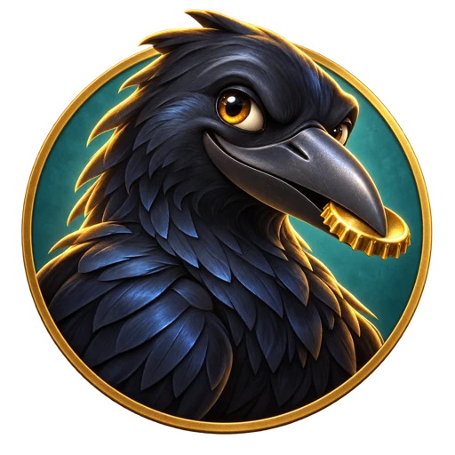
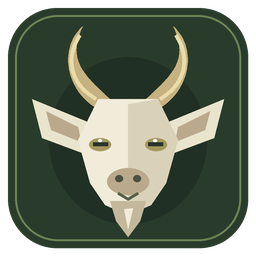

Małe światy.
Duże przygody.
Wybierz grę i wskocz do środka. Wszystko działa bez instalowania.

Gra 3D · komputer i telefon
Głupie wrony
Lataj nad miastem, szukaj błyskotek i wychowuj małe wrony. Graj myszką lub dotykiem na telefonie.
Zagraj ↗
Gra 3D · komputer
Goat Simulator — Kozi Raj
Zwiedzaj farmę, podjadaj lody i przechytrz koziego strażnika. Trenuj na siłowni, aby odblokować miasto.
Zagraj ↗Przygoda pod ziemią · wszystkie urządzenia
Kret — Podziemna przygoda
Kop tunele, nasłuchuj drgań, urządź norę i przetrwaj spotkania z drapieżnikami. Na telefon, tablet i komputer.
Zagraj ↗